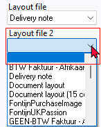

Document printing options
Where are Document layout files stored?
Documents can be printed/reprinted at any stage. To be able to print documents, you can select the document layout files stored in the " ... \ plug_ins \ reports \ DOCUMENTS \ DOCUMENTS \" directory or file folder of your osFinancials5 installation on your system.
When you want to customize document layout files according to your requirements, it is recommended to make a copy of the existing document layout file, and save it under your unique name. To be able to select your own document layout files to print, print it must be " ... \ plug_ins \ reports \ DOCUMENTS \ DOCUMENTS \" directory or file folder of your osFinancials5 installation stored on your system.
Options to print Document layout files
Documents may be printed / reprinted at any stage using the following options on the Default ribbon:
- Documents - Selection screen (Print button). This will print the documents for the selected document for a specific document type.
- Debtors (Documents tab) - Select a list on a document and print it. Allows you to search and filter for and locate specific document.
- Creditors (Documents tab) - Select a list on a document and print it. Allows you to search and filter for and locate specific document.
- Stock items (Document groups tab of a selected stock item) - Select a document and double-click to print it.
- Search (Investigator) – Search and double click on a document.
|
|
To determine which documents have not yet been printed, you can use the following options:
|

Select layout files
The layout files selected for each document type on the Setup → Documents setup menu (Setup ribbon) are the global default layout files that will be used to print documents. You may select up to two (2) Layout files for each document type (i.e. Quotes, Invoices, Credit notes, Orders, Purchases and Supplier returns).
Layout file 2 is optional. If layout file 2 is selected, it will print Layout file 2 document after the first layout file.
|
|
The first Layout file is required (global setting) and will serve as the default option for printing document layout files (for example, if "Default" is selected in the Layout file" field for Documents. |

Specific layout files may also be selected on the Default ribbon for:
- Debtors - Delivery address tab - Each debtor (customer / client) account by selecting a different layout file in the Layout file 1 (Invoices), Layout file 2 (Credit notes), Layout file 3 (Quotes).
- Creditors - Delivery address tab - Each creditor (supplier / vendor) account by selecting a different layout file in the Layout file 1 (Purchases), Layout file 2 (Supplier return), Layout file 3 (Orders).
|
|
The global settings will be over-ruled. |

In addition to these settings, you may also select a different layout file when printing documents on the "Layout file" fields of the following options (Default ribbon):
- Documents - Selection screen (Print button) - You may select up to four (4) layout files. If you have selected a layout file for Layout file 2, Layout file 3 and/or Layout file 4, and you no longer want to print these layout files, you can select the blank option.
- Debtors (Documents tab)
- Creditors (Documents tab)
|
|
Layout files are stored in the "...\plug_ins\reports\DOCUMENTS\DOCUMENTS" directory. These may be edited using the Reportman (Report designer accessed from Setup ribbon). |
Layout files have been designed to be displayed in the Language file (Switch language on the Start ribbon). If you change the language, the layout file will be displayed in the selected language.
|
|
Should the correct tax terminology (e.g. Sales Tax, VAT, GST) not be displayed on layout files, you need to select the correct language / country file. |